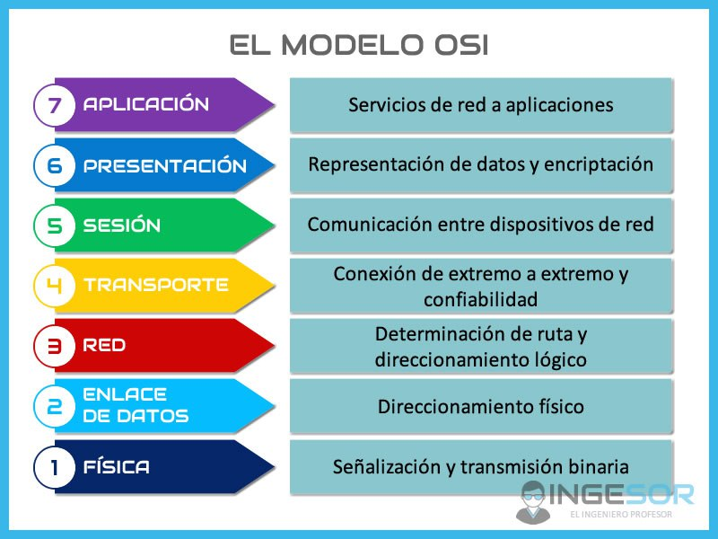
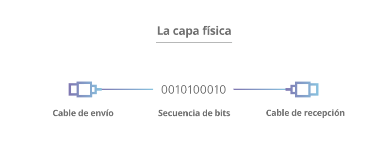
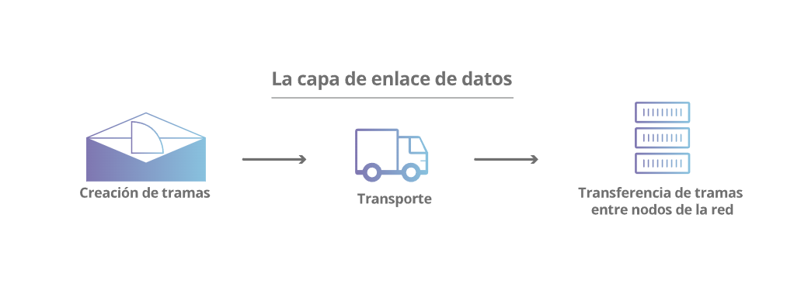
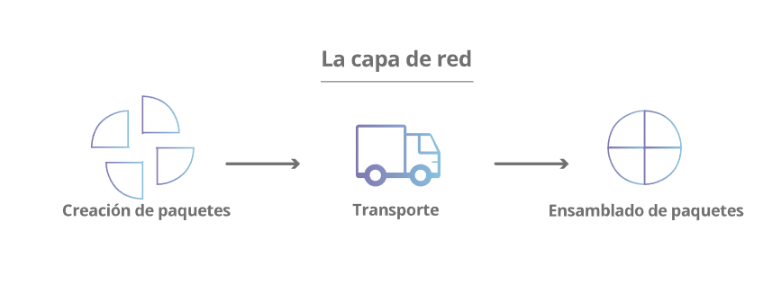
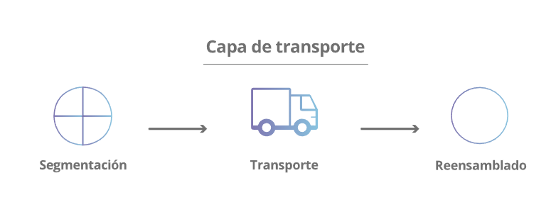
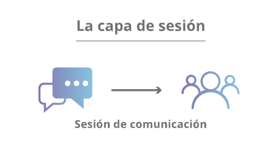
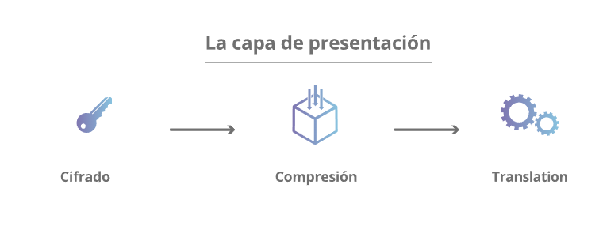
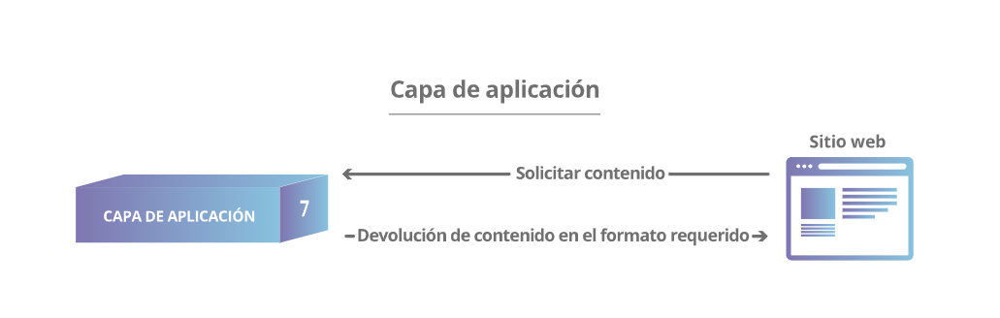

MODELO ISO
¿Qué es?
El modelo de interconexión de sistemas abiertos (OSI, por sus
siglas en inglés) es un modelo conceptual, creado por la
Organización Internacional de Normalización (ISO), que permite que
diversos sistemas de comunicación se comuniquen usando protocolos
estándar. En resumidas cuentas, el modelo OSI proporciona a los
diferentes sistemas informáticos un estándar para comunicarse
entre sí. El modelo OSI se puede entender como un lenguaje
universal de comunicación entre sistemas de redes informáticas que
consiste en dividir un sistema de comunicación en siete capas
abstractas, apiladas en vertical. Cada capa del modelo OSI tiene
una función específica y se comunica con las capas superiores e
inferiores. Los ataques DDoS se dirigen a capas específicas de una
conexión de red, los ataques a la capa de aplicación se dirigen a
la capa 7, mientras que los ataques a la capa de protocolo se
dirigen a las capas 3 y 4.

¿Cuáles son las siete capas del modelo ISO?
-
Capa física: Esta capa incluye los dispositivos físicos
que participan en la transferencia de datos, como los cables. Se
trata también de la capa en la que los datos se convierten en
una secuencia de bits, que es una serie de unos y ceros. La capa
física de ambos dispositivos debe consensuar además una
convención de señales que permita distinguir los unos de los
ceros en ambos dispositivos.

-
Capa de enlace de datos: La capa de enlace de datos es
muy similar a la capa de red, salvo que lo que hace es facilitar
la transferencia de datos entre dos dispositivos ubicados en una
MISMA red. La capa de enlace de datos toma los paquetes de la
capa de red y los rompe en trozos más pequeños denominados
tramas. Al igual que la capa de red, la capa de enlace de datos
es también la responsable del control de flujo y de errores
respecto de esa comunicación dentro de la red (la capa de
transporte solo realiza esto último respecto de comunicaciones
entre redes).

-
Capa de red: La capa de red es la responsable de
posibilitar las transferencias de datos entre dos redes
diferentes. Si los dos dispositivos que se comunican están en la
misma red, entonces no hará falta esta capa de red. La capa de
red lo que hace es fragmentar, en el dispositivo emisor, los
datos de la capa de transporte en unidades más pequeñas llamadas
paquetes y rearmarlos después en el dispositivo receptor. La
capa de red también busca el mejor camino físico para que los
datos lleguen a su destino, esto se conoce como enrutar.

-
Capa de transporte: La capa 4 es la responsable de las
comunicaciones de extremo a extremo entre dos dispositivos. Esto
implica, antes de proceder a ejecutar el envío a la capa 3,
tomar datos de la capa de sesión y fragmentarlos seguidamente en
trozos más pequeños llamados segmentos. La capa de transporte
del dispositivo receptor es la responsable luego de rearmar
tales segmentos y construir con ellos datos que la capa de
sesión pueda consumir. La capa de transporte es también la
responsable del control de flujo y del control de errores. El
control de flujo sirve para determinar la velocidad óptima de
transmisión que garantice que un emisor con velocidad de
conexión alta no apabulle a un receptor cuya conexión sea lenta.
La capa de transporte realiza un control de errores en el
extremo receptor consistente en asegurarse de que todos los
datos recibidos estén completos, y solicitará el reenvío en caso
de que no.

-
Capa de sesión: La capa de sesión es la responsable de
la apertura y cierre de comunicaciones entre dos dispositivos.
Ese tiempo que transcurre entre la apertura de la comunicación y
el cierre de esta se conoce como sesión. La capa de sesión
garantiza que la sesión permanezca abierta el tiempo suficiente
como para transferir todos los datos que se están
intercambiando; tras esto, cerrará sin demora la sesión para
evitar desperdicio de recursos. La capa de sesión también
sincroniza la transferencia de datos utilizando puntos de
control. Por ejemplo, si un archivo de 100 megabytes está
transfiriéndose, la capa de sesión podría fijar un punto de
control cada 5 megabytes. En caso de desconexión o caída tras
haberse transferido, por ejemplo, 52 megabytes, la sesión podría
reiniciarse a partir del último punto de control, con lo cual
solo quedarían unos 50 megabytes pendientes de transmisión. Sin
esos puntos de control, la transferencia en su totalidad tendría
que reiniciarse desde cero.

-
Capa de presentación: Esta capa es principalmente
responsable de preparar los datos para que los pueda usar la
capa de aplicación; en otras palabras, la capa 6 hace que los
datos se preparen para su consumo por las aplicaciones. La capa
de presentación es responsable de la traducción, el cifrado y la
compresión de los datos. Dos dispositivos de comunicación que se
conectan entre sí podrían estar usando distintos métodos de
codificación, por lo que la capa 6 es la responsable de traducir
los datos entrantes en una sintaxis que la capa de aplicación
del dispositivo receptor pueda comprender. Si los dispositivos
se comunican a través de una conexión cifrada, la capa 6 es
responsable de añadir el cifrado en el extremo del emisor, así
como de decodificar el cifrado en el extremo del receptor, para
poder presentar a la capa de aplicación datos descifrados y
legibles. Después, la capa de presentación es también la
encargada de comprimir los datos que recibe de la capa de
aplicación antes de ser enviados a la capa 5. Esto ayuda a
mejorar la velocidad y la eficiencia de la comunicación mediante
la minimización de la cantidad de datos que serán transferidos.

-
Capa de aplicación: Esta es la única capa que interactúa
directamente con los datos del usuario. Las aplicaciones de
software, como navegadores web y clientes de correo electrónico,
dependen de la capa de aplicación para iniciar comunicaciones.
Sin embargo, debe quedar claro que las aplicaciones de software
cliente no forman parte de la capa de aplicación; más bien, la
capa de aplicación es responsable de los protocolos y la
manipulación de datos de los que depende el software para
presentar datos significativos al usuario. Los protocolos de la
capa de aplicación incluyen HTTP, así como también SMTP (el
Protocolo simple de transferencia por correo electrónico, uno de
los protocolos que permiten las comunicaciones por este medio).
